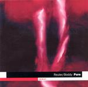

Home Artist links Label link

Reuter/Boddy - Pure
| Artist: | Reuter/Boddy |
| Title: | Pure |
| Label: | DIN DiN17 |
| Length(s): | 55 minutes |
| Year(s) of release: | 2004 |
| Month of review: | [06/2005] |
Line up
Markus Reuter - warr guitar
Ian Boddy - synth pads, programmed percussion
Tracks
| 1) | Presence | 3.48
|
| 2) | History | 3.53
|
| 3) | This Life | 4.30
|
| 4) | Glisten | 3.46
|
| 5) | Immersion | 6.07
|
| 6) | Clearing | 6.06
|
| 7) | The Source | 3.49
|
| 8) | The Level | 8.40
|
| 9) | Breathe | 3.30
|
| 10) | Fragments | 5.05
|
| 11) | Pure | 5.53
|
Summary
Reuter and long standing EM artist Boddy combine their efforts on this one,
although it is Reuter who gets the majority of the composition credits,
and it is Boddy who took care of mixing and mastering.
The music
Presence reveals what this duo is all about: sophisticated Electronic
Music, very nicely and warmly produced and crystal clear. On the whole quite
soothing. History does have a beat, but it stays relaxed.
This Life might even be called funk, towards modern dance music
like Daft Punk (but better, obviously).
Glisten is pure, and complex EM, a mature exemplar of the genre. Not as
melodious as Kitaro or Vangelis, but still quite melodic, and certainly
not sequencer riddled as most EM seems to be nowadays. More dreamy and
comparable to Fripp's solo Soundscapes and ambient music.
Immersion not surprisingly has watery sounds, like a cool pond, complete
with longsustained sounds.
After Clearing, The Source has some really nice melodies, and is one of those
layered songs that have something new to listen to whenever you care to listen. In fact, it is a bit like a display, where you can choose yourself
what exactly you are paying attention to, the rest becoming a harmonious
background. The style should be obvious by now, although Breathe
has comparsons to O'Hearn's solo work.
Conclusion
A mature album, by two respected names in the field. The music is hard to
pin down, which I guess is good, and offers a pleasant, high-fidelity
listen without any danger of getting bored. If you are into EM at all, this
one comes recommended.
© Jurriaan Hage